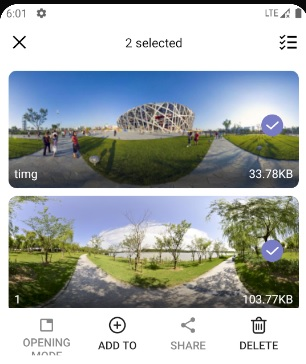
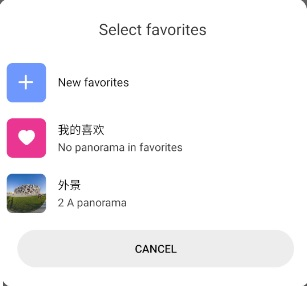
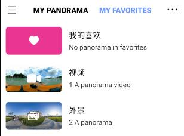

Long press panorama on the home page or album page to enter the selection mode.
Select the panoramas you want to classify and click "add to" in the lower right corner.

You can create a new favorites or add it to an existing one.

After that, you can view the items you have classified in the "My favorites" page.

Alternatively, you can click "more" in the existing favorites and choose to import panorama, which can also
import the specified panorama into the favorites.